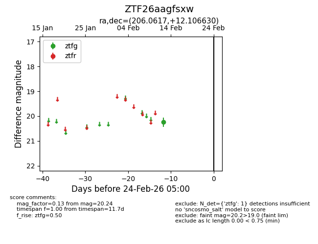
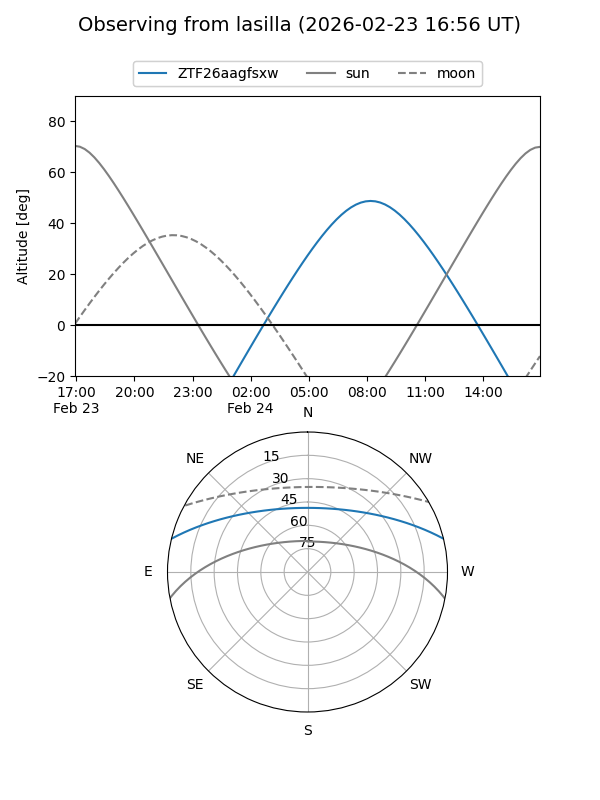
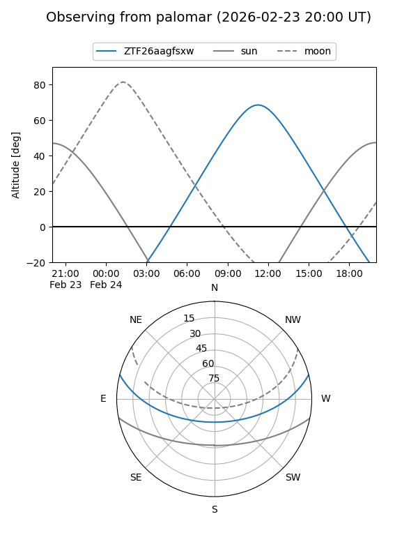

ZTF26aagfsxw
Target ZTF26aagfsxw at 2026-02-24 09:08
Aliases and brokers:
FINK: link
Lasair: link
ALeRCE: link
alt names
ZTF26aagfsxw (ztf,fink_ztf)
Coordinates:
equatorial (ra, dec) = 206.0617,+12.10663
equatorial (HMS+DMS) = 13:44:14.80,+12:06:23.87
galactic (l, b) = (345.0020,+70.53221)
Flags:
Photometry:
last ztfg=20.24
1 ztfg detections
Lightcurve

Visibility


Additional plots